空地跨视角行人重识别
项目概述
本项目开始于2024年3月，2024年11月结束。主要研究空中和地面视角的跨视角ReID任务。作为xx项目鲁棒跟踪模块的预研方向，项目主要贡献为：
- 提出了一种自校准自学习的提示学习方法SeCap，用于解决AGPReID任务中的视角差异问题
- 提出了两个大规模的数据集 LAGPeR和G2APS-ReID
- SeCap在所有AGPReID数据集上均取得了SOTA结果
最终项目成果：
- 2025 CVPR Accepted. Final Rating： 5 5 4
- 一项发明专利：一种基于自进化视觉提示学习的空地协同目标识别方法（申请阶段） 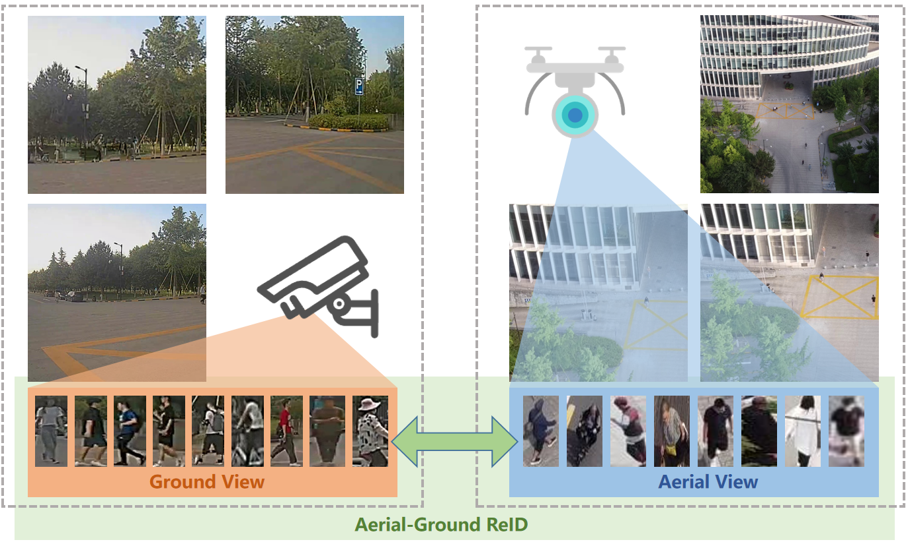
项目地址：https://github.com/zhengye1995/SeCap-AGPReID
项目展示
数据集：
LAGPeR包含4231个ID，63841张图片，包括21个相机，分为地面平视、地面斜视和空中俯视三个视角。G2APS-ReID包含2788个ID，200864张图片，包括2个相机，分为地面平视和空中俯视两个视角。LAGPeR为本项目收集、标注、划分和构建的数据集；G2APS-ReID为从一个大规模的行人搜索数据集G2APS中重构的数据集。
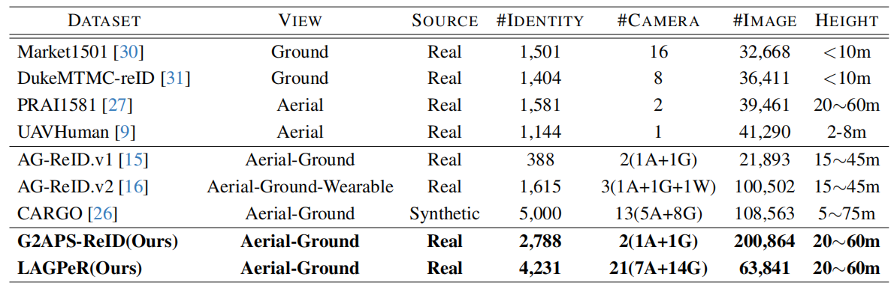
G2APS-ReID数据集包含2个实验设置：$G \rightarrow A$ 和 $A \rightarrow G$；LAGPeR数据集包含3个实验设置：$G \rightarrow G$、$G \rightarrow A$ 和 $G \rightarrow A+G$。其中，$G \rightarrow A$表示在地面视角下图像做查询（query），在空中视角下图像做图库（gallery）；$G \rightarrow A+G$表示在地面视角做查询，图库则有地面视角和空中视角共同组成。
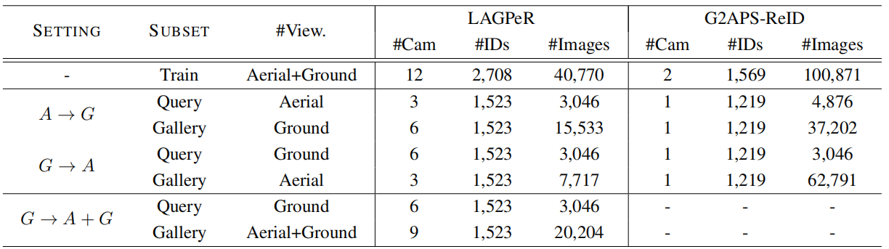
模型：
本项目主要研究AGPReID任务，因此主要关注视角差异对ReID模型的影响。本项目提出了一种自校准自学习的提示学习方法SeCap，用于解决AGPReID任务中的视角差异问题。SeCap的整体框架，如下图所示，采用了编解码器变压器架构。该编码器是一个添加了视角解耦能力的标准的ViT。与传统的ViT相比，我们的方法包含了一个视图令牌，并在每一层对Cls令牌进行分层解耦，有效地在Cls令牌中分离了视角特定和视角独立的特征，同时从图像中提取视觉特征。我们从VDT中汲取灵感，使用了一个视图分类器来约束视图标记。利用正交损失来确保透视特征的完全分离。该解码器包括提示校准模块（PRM）和局部特征细化模块（LFRM）。PRM根据视图解耦信息自适应地生成和校准不同视角的提示。同时，LFRM利用来自PRM的重新校准的提示来解码视觉特征中的局部特征。
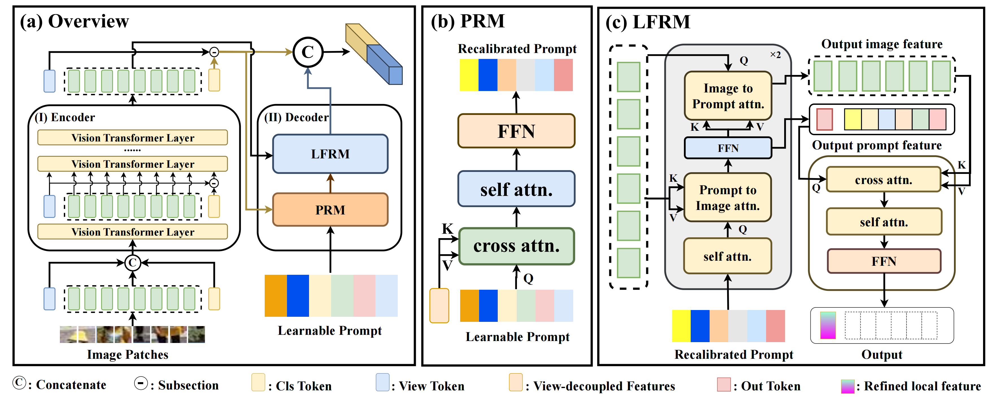
提示重校准模块
提示重新校准模块（PRM）是基于变压器译码器架构设计的，旨在自适应地生成适合不同视角的提示。具体来说，这个模块初始化并维护一组提示${[{Prompt}_1，{Prompt}_2，\dots，{Prompt}_L]}$，其中$L$是一个表示提示长度的超参数。在提示的重新校准过程中，该模块接收到来自主干网络的视图解耦特征。如图2（a）所示，该模块最初通过多头交叉注意将视图解耦特征整合到可学习提示中，从而增强了提示对视觉特征中视点不变信息的关注。随后，采用多头注意机制对提示序列中的每个提示的信息进行合并和校准，确保视图解耦特征的全面集成。最后，应用前馈网络（FFN）来生成专门针对视图解耦特性而定制的重新校准的提示。
局部特征细化模块
局部特征模块是一个基于TransFormer的解码器，如图所示，它利用PRM重新校准后的特征提示$P{re}$对骨干网络输出的视觉特征$F{local}$进行解耦。重新校准的提示融合了全局视图解耦特征的信息，能够指导LFRM解码出局部特征中与视角无关特征，从而实现局部特征与全局特征的对齐。具体来说LPRM由双向注意力块和特征输出模块组成。双向注意力模块在在提示到图像编码（prompt-to-image encoding）和图像编码到提示（image-to-prompt encoding）两个方向上并行运用自注意力（self-attention）和交叉注意力（cross-attention）动态更新并增强所有特征表示。通过双向注意力，LPRM可以高效的融合并更新视觉特征的局部信息和特征提示中的解耦信息。为了保持解码模块的轻量化，我们在双向注意力模块中只堆叠两个双向注意力块。同时，在双向注意力模块后，特征输出模块使用交叉注意力和自注意力对双向注意力模块输出的局部视觉特征和提示特征进行进一步整合，从而解码出局部视觉特征中视角无关的特征。
项目结果
对比实验结果
在LAGPeR和G2APS-ReID数据集上，SeCap均取得了SOTA的结果。
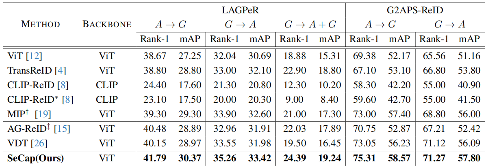
在 AG-ReID、AG-ReIDv2和CARGO上的结果。
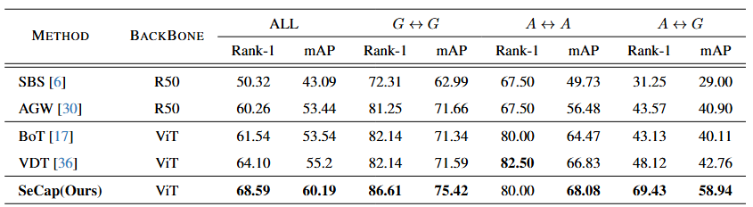
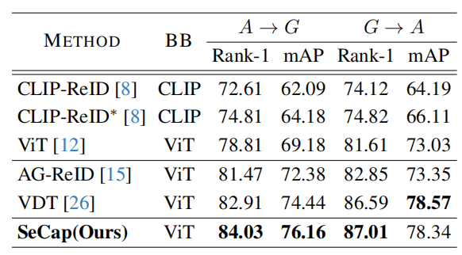
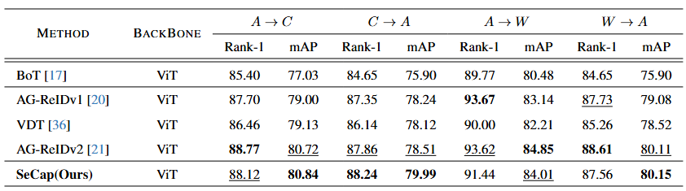
消融实验结果：
整体消融实验，验证PRM、LFRM、VDT的效果：
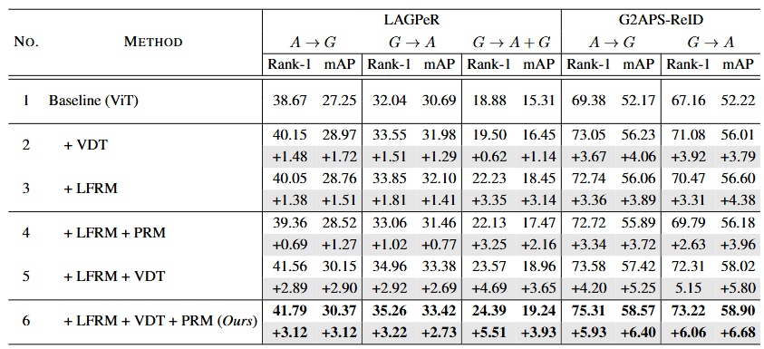
模块消融实验，研究PRM、LFRM的各种实现方式：
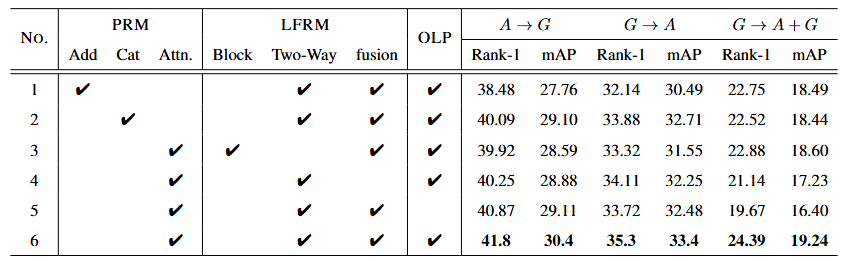
可视化结果：
t-SNE可视化结果：
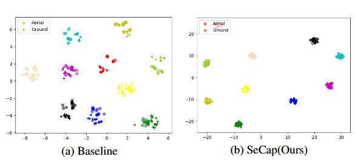
检索结果可视化：
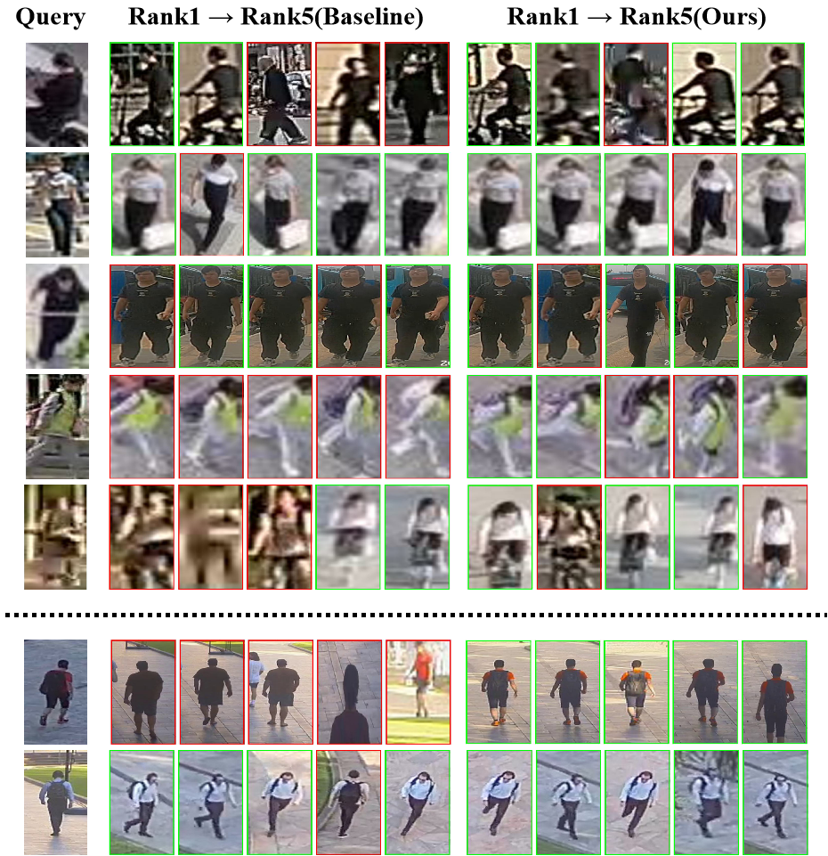
Attention_Map可视化：
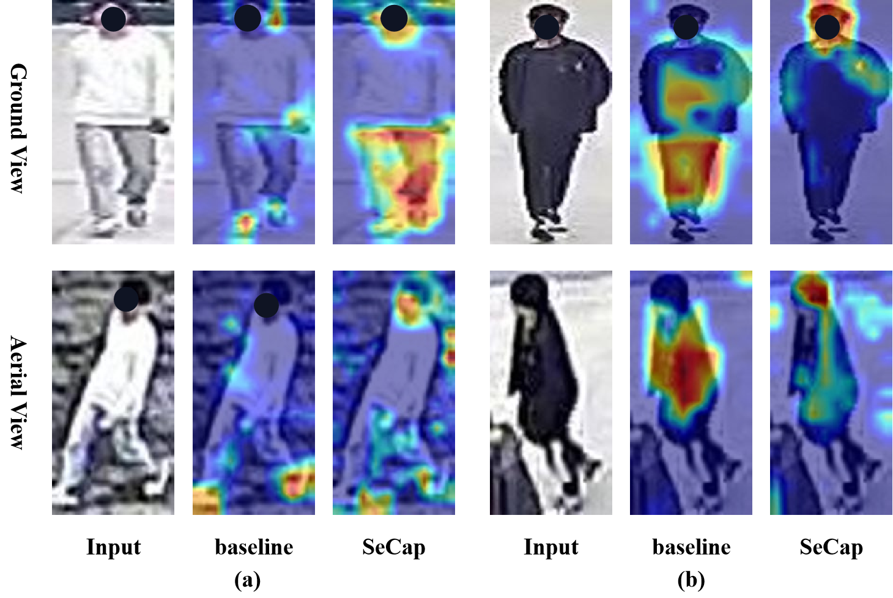
参数分析可视化：
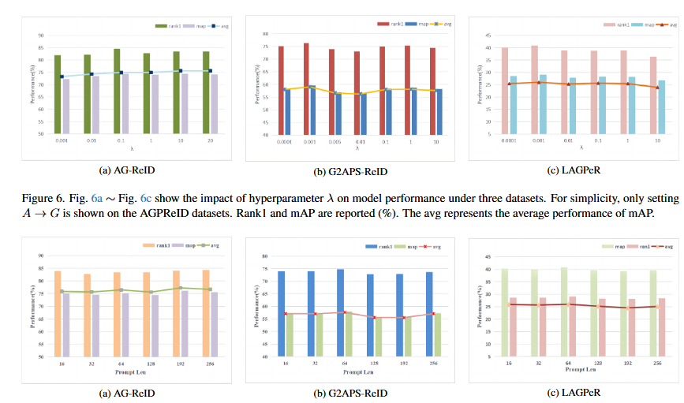